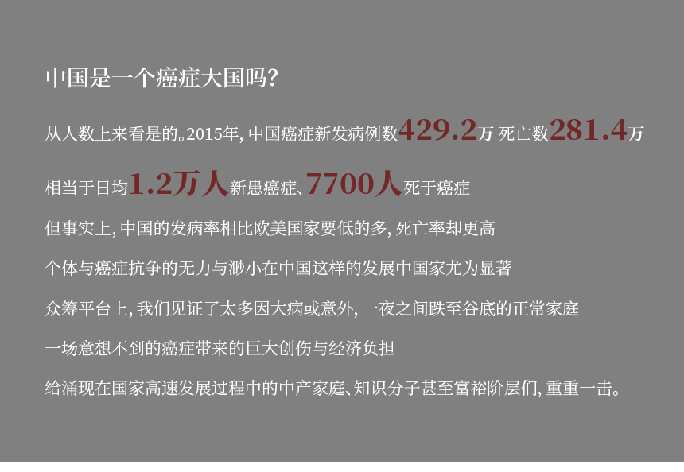

2012年，中国癌症发病人数为306.5万，约占全球发病的五分之一；癌症死亡人数为220.5万，约占全球癌症死亡人数的四分之一。 显然，这是一个谁也不能忽视的事实：中国这个发展中国家拥有全世界四分之一的癌症患者。
从癌症患者的数量上看，近年来，中国患癌人数逐年攀升，且以绝对数量稳居全世界癌症新增病例数之首。
有一个重要的特征被媒体忽视了，中国的人口基数。
事实上，中国的癌症发病率（以每10000人中患病数量计算）在全球范围来看处于相对较低的水平。 图中是全球183个国家在2012年的年龄标准化癌症发病率与死亡率。可以看出，绝大多数欧美国家的癌症发病率都高于中国，而中国的死亡率却高于绝大部分欧美国家。
数据说明：ASR，age-standardized rates，标准年龄化率。为了避免各国由于年龄结构不一致而统一采用标准化年龄结构来计算发病率与死亡率。Age-standardised rates reflect the rate—for example, incidence (number of new cases) or mortality (number of deaths)—that a population would have
if it had a standard age structure.
数据来源:GLOBOCAN IARC (http://gco.iarc.fr/today) World Health Organization
数据来源：KIM, S.-G., HAHM, M.-I., CHOI, K.-S., SEUNG, N.-Y., SHIN, H.-R. and PARK, E.-C. (2008), The economic burden of cancer in Korea in 2002. European Journal of Cancer Care, 17: 136–144. doi:10.1111/j.1365-2354.2007.00818.x
为何中国癌症的死亡率高，一个重要的原因是患癌类型的区别。中国多发的癌症是高致死率的肝癌与肺癌，而欧美多发是低死亡率的乳腺癌、前列腺癌与皮肤癌。
这些高致死率的癌症多发生在发展中国家，因此被称为“穷癌”，这与欠发达国家的环境、医疗卫生水平有很大关系。而欧美人多是由于生活习惯和年龄增长等原因患癌，故称为“富贵癌”。
而近年来，随着人们生活水平的提高，多发生在欧美国家的富癌也悄然登入中国。从左图可以看出，乳腺癌已成为中国高发癌症的第四位。
值得注意的是，肝癌、肺癌的死亡率在全世界范围内都处在一个较高的水平，而乳腺癌、前列腺癌等类型癌症的死亡率在发达国家与发展中国家差异却很显著。
上图展示了全球24种癌症的平均致死率与最低致死率标准下的癌症治疗费用。
从颜色深浅可以看出，右侧的深色方形格的比例要高于左侧深色方形格的比例，也就是说，治疗费用偏高的癌症类型例如甲状腺癌、结直肠癌、乳腺癌的存活率也更高。 而肝癌、白血病、胃癌这类癌症的治疗费用相对偏低，但却有着较高的致命率。
这一定程度上可以解释，为何中国新患上的”富癌“生存率要远低于美国。乳腺癌在中国的5年相对生存率是73.1%，在美国是89%，前列腺癌在中国的相对生存率是53.8%，在美国是99%。所有癌症综合起来，中国的5年生存率达到了30.9%，美国的比例是66%。日本国立癌症研究中心公布的数据显示，日本2008年的5年生存率为62.1%。 英国国家统计局（Officefor National Stastics,ONS)数据显示，英国的整体癌症生存率达到54%。
这似乎是一个颠扑不破的真理。究竟是否真的国家越发达，收入水平越高，癌症的存活率就越高？让数据来告诉你答案。
数据说明：高、中高、中低、低收入国家的划分标准来自World Bank’s List of Economies.The standards are:low income, US$975 or less; lower middle income, US$976–3,855; upper middle income, US$3,856–11,905; and high income, $11,906 or more
数据来源：Economists Intelligence Unit (2009) Breakaway: The Global Burden of Cancer-Challenges and Opportunities, a Report from the Economist Intelligence Unit. The Economist.
根据世界银行2009年对中高低收入国家的划分，上图展示了收入阶梯式分布的四类国家不同癌症类型的死亡率与用于癌症治疗的总费用
圆圈大小表示癌症支出的多少。可以显著看出，癌症总支出费用随收入水平上升而增加，癌症死亡率随收入水平上升而下降。
数据说明：中国的人均癌症支出数据来自中国国家癌症中心城市癌症筛查项目健康经济评估工作组在《The Lancet》上发表的研究成果；美国的癌症人均支出是用美国国家癌症中心公布的2010年美国癌症总支出除去当年美国新增和存活病例之和计算所得；人均GDP选择了癌症费用统计当年的数据；公共医疗支出与个人自付医疗支出数据来自World Bank；癌症负担指数=人均GDP/人均癌症支出。
数据来源：[1]Expenditure and financial burden for common cancers in China: a hospital-based multicentre cross-sectional study Huang, Hui-Yao et al. The Lancet , Volume 388 , S10
[2]Mariotto, Angela B. et al. “Projections of the Cost of Cancer Care in the United States: 2010–2020.” JNCI Journal of the National Cancer Institute 103.2 (2011): 117–128. PMC. Web. 23 Aug. 2017.
[3]http://data.worldbank.org.cn/indicator
中美癌症生存率的差异与中美人均癌症负担呈现出极端两级分化的情况。
中国的癌症5年生存率30.9%，美国的生存率达到66%。
中国癌症患者的人均癌症负担是9739美元，与人均GDP的比是0.8。美国2014年的人均癌症负担约为9045.2美元，与2014年的GDP比值是5.3。
中国的癌症负担之所以这么重，与中国的大病医保制度尚未完善有很大关系。据世界银行提供数据，2016年，中国公共医疗支出占政府总支出的比例是10.43%，医疗支出的自费比例达32%。
尽管从2002年到2011年十年间，中国的人均卫生保健支出在不断增高，但也只是从 2002 年的人均 54 美元升高到 2011 年的人均 278 美元，而 2011 年的美国则是 8607.9 美元。 柳叶刀杂志关于中国癌症的分析数据显示，到2011年，国内的医保覆盖率已经达到 95.7%，虽然覆盖率达到一个很高水平，但是在报销比例上却很低。平均报销比例，住院病人不超过 70%，门诊病人不超过 50%。而实际花费上，中国病人的自费比例大约 78.8%。
中国癌症治疗的缺口与中国地区、城乡差异有密切的联系。中国的流动人口与农民工的数量大约1亿7千万，如此庞大的群体给医疗保健带来了巨大的挑战，在这些流动人口中，仅有 19-45%可以在迁入地获得医保，而有 53%的人在得病之后可能无法获得医生的诊治。
除去流动人口的因素，另外一个不可忽视的因素是区域间医疗资源的严重不均。城市中每千人可用于癌症病人的床位是6.24张，而乡村只有2.8张，东部地区每千人可获取到5.22名医务人员和3.96张床位，中部地区每千人可获取到3.3名医务人员和3.3张床位，西部地区每年人可获得3.76名医务人员和3.35张床位。资源的不均衡也体现在了癌症生存率数据上，西南地区的生存率最低，仅为24.9%。
因此，为了获得更好的医疗设施，癌症病人从全国各地涌入北京、上海等大城市的大医院，不仅资源供不应求，还大大增加了病人治疗的时间延误风险。
数据说明：ASR incidence/Mortality是指年龄标准化发病率/死亡率;1-M/I是指1-Mortality/Incidence,即粗算的生存率
数据来源：[1]Chen, W., Zheng, R., Baade, P. D., Zhang, S., Zeng, H., Bray, F., Jemal, A., Yu, X. Q. and He, J. (2016), Cancer statistics in China, 2015. CA: A Cancer Journal for Clinicians, 66: 115–132. doi:10.3322/caac.21338
[2]Challenges to effective cancer control in China, India, and Russia Paul E Goss et al,The Lancet Oncology, Vol. 15, No. 5, p489–538
穷与富之间
癌症费用与生存率的残酷现实成为考量一个国家医疗保障水平的重要窗口
透过这个小的窗口
我们能够窥见财富、疾病、地缘在中国癌症进程中起到的错综复杂的关系
策划：苏洁
数据：苏洁
设计：苏洁
开发：苏洁